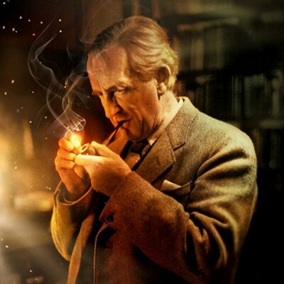

Tolkien rád vymýšľal fantastické príbehy pre zábavu svojich detí. Každé Vianoce pre nich napísal listy typickým roztraseným písmom Santa Clausa a zostavil tak sériu krátkych príbehov – neskôr zozbieranú a publikovanú ako The Father Christmas Letters.
Tolkien nikdy neočakával, že jeho vymyslené príbehy budú zaujímať viac než iba úzku skupinu ľudí. Na naliehanie bývalého študenta publikoval knihu The Hobbit (1937) (v slovenčine Hobit), ktorú pôvodne napísal iba pre svoje deti. Aj keď bola určená deťom, kniha si získala aj dospelých čitateľov a stala sa takou populárnou, že nakladateľ, firma Allen & Unwin, požiadal Tolkiena o napísanie pokračovania. To ho inšpirovalo k vytvoreniu jeho najznámejšieho diela, ktorým sa stal výpravný trojdielny román The Lord of the Rings (1954 – 55) (v slovenčine Pán prsteňov). Tolkien k jeho napísaniu potreboval takmer 10 rokov, počas ktorých bol neustále povzbudzovaný v klube Inklings, najviac však svojím najbližším priateľom C. S. Lewisom, autorom kníh o Narnii.
V 60. rokoch sa Pán prsteňov stal veľmi populárny najmä medzi študentmi a od tej doby ho nezmenšujúci sa okruh jeho obdivovateľov radí medzi najpopulárnejšie romány 20. storočia, a to ako podľa odhadovaného počtu priaznivcov, tak aj podľa počtu predaných výtlačkov. Pán prsteňov bol čitateľmi na britskom TV kanáli 4 a reťazcom kníhkupectiev firmy Waterstone zvolený za najvýznamnejšiu knihu 20. storočia. V roku 1999 zákazníci internetového kníhkupectva Amazon.com v hlasovaní vybrali Pána prsteňov ako najvýznamnejšiu knihu tisícročia.
Keď začínal písať prvú kapitolu Pána prsteňov, myslel si, že bude rozprávať rozprávky pre deti podobne ako v Hobitovi, ale časom príbeh stále temnel a stával sa vážnejším. Aj keď je Pán prsteňov pokračovaním Hobita, obracia sa skôr na staršie publikum, na pozadí hlavného deja rozohráva úryvky ďalších príbehov a vykresľuje tak fascinujúcu atmosféru neodhalených tajomstiev starobylej histórie sveta Stredozeme. Mytológia tohto sveta je ďalej rozvinutá v knihe The Silmarillion (v slovenčine Silmarillion) a mnohých ďalších, ktoré z pozostalosti vydal syn Christopher. Tolkien výrazne ovplyvnil žáner fantasy, ktorého obľuba po úspechu Pána prsteňov významne stúpla.
Keď začínal písať prvú kapitolu Pána prsteňov, myslel si, že bude rozprávať rozprávky pre deti podobne ako v Hobitovi, ale časom príbeh stále temnel a stával sa vážnejším. Aj keď je Pán prsteňov pokračovaním Hobita, obracia sa skôr na staršie publikum, na pozadí hlavného deja rozohráva úryvky ďalších príbehov a vykresľuje tak fascinujúcu atmosféru neodhalených tajomstiev starobylej histórie sveta Stredozeme. Mytológia tohto sveta je ďalej rozvinutá v knihe The Silmarillion (v slovenčine Silmarillion) a mnohých ďalších, ktoré z pozostalosti vydal syn Christopher. Tolkien výrazne ovplyvnil žáner fantasy, ktorého obľuba po úspechu Pána prsteňov významne stúpla.
Tolkien bol profesionálnym lingvistom a jazyky a mytológie, ktoré študoval, priamo ovplyvňovali jeho tvorbu. Napríklad mená trpaslíkov v Hobitovi boli prevzaté zo severskej mytológie z básne Voluspa, časti eposu Edda. Naproti tomu niektoré zápletky (napr. zlodej, ktorý ukradne pohár z dračieho pokladu) prevzal zo staroanglickej epickej básne Beowulf. Tolkien bol uznávaným znalcom Beowulfa a publikoval na túto tému niekoľko vedeckých prác. Skôr nepublikovaný preklad Beowulfa od Tolkiena zostavil Michael Drout.
Tolkien pracoval na histórii Stredozeme až do svojej smrti. Jeho syn Christopher Tolkien s pomocou spisovateľa fantasy Guya Gavriela Kaya usporiadal niektoré materiály do ucelenej podoby a vydal ich ako The Silmarillion (1977). Christopher Tolkien v ďalších rokoch pokračoval vo vydávaní materiálu použitého pri vytváraní Stredozeme. Diela z pozostalosti ako The History of Middle-earth (doslova „História Stredozeme“) alebo Unfinished Tales (doslova „Nedokončené príbehy“) obsahujú nedokončené, opustené, alternatívne alebo odporujúce si verzie príbehov, pretože Tolkien pracoval na svojej mytológii desaťročia a neustále jednotlivé príbehy prepisoval, upravoval a rozvíjal. Iba Silmarillion sa pokúša udržať naozajstnú konzistenciu s Pánom prsteňov a to iba vďaka rozsiahlym úpravám Christophera Tolkien – aj keď on sám tvrdí, že tam ešte veľa nezrovnalostí ostalo. (Dokonca ani Hobit nie je celkom v súlade s Pánom prsteňov, aj keď pri druhom vydaní (1951) bola jedna kapitola podstatne zmenená).
Knižnica Marquetteho univerzity v Milwaukee (Wisconsin, USA) uchováva veľa Tolkienových pôvodných rukopisov, poznámok a listov; iné pôvodné materiály zostávajú v Oxfordskej Bodleiho knižnici. Marquetteho univerzita vlastní rukopisy a korektúry Pána prsteňov, Hobita, rukopisy mnohých „nižších“ kníh ako Farmer Giles of Ham a materiály od Tolkienových obdivovateľov, zatiaľ čo Bodleiho knižnica má materiály k Silmarillionu a Tolkienove vedecké práce.
Dňa 17. apríla 2007 vychádza v Anglicku nikdy nevydaný román „Húrinove deti“ (The Children Of Húrin, HarperCollins 2007). Román mohol vyjsť opäť vďaka práci Tolkienovho syna Christophera. Tolkien pracoval na Húrinových deťoch približne rovnako dlho ako na „The Silmarillion“ a predstavuje jeden z troch veľkých príbehov o Stredozemi, na ktorých Tolkienovi záležalo najviac. Na Slovensku román vychádza deň po anglickej premiére, teda 18. apríla 2007 (Slovart 2007).
